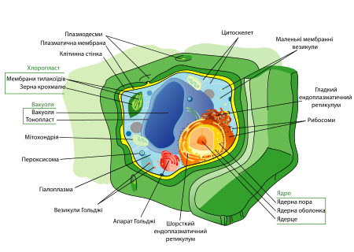

КЛІТИНА. БУДОВА РОСЛИННОЇ КЛІТИНИ
Клітина (лат. cellula — комірка) — структурно-функціональна одиниця всіх живих організмів, для якої характерний власний метаболізм та здатність до самовідтворення.
Будова клітин рослин, тварин, грабів, бактерій досить різняться.
У цій статті ми розглянемо будову рослинної клітини.
